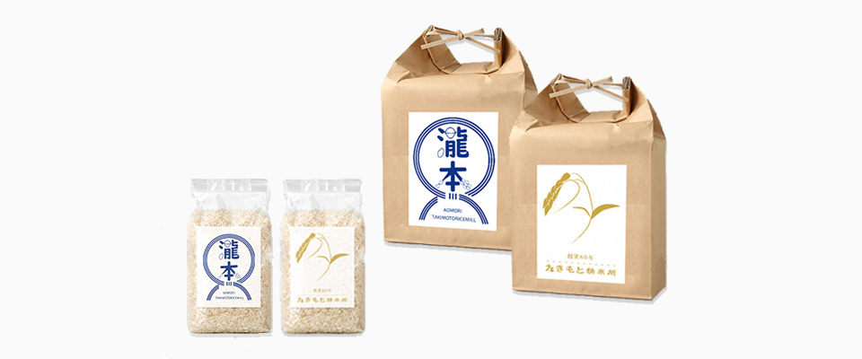

仮装ロゴデザイン
一粒のみを大きくし、こだわり抜かれた大粒のお米を表現し特別感を強調。贈答用としても喜ばれるよう、高級感をイメージさせる配色にこだわった。
制作時間：2時間
使用ソフト：Illustrator
精米所の名前の一部を稲穂に見立て、たわわに実る様子を表現。囲み枠で引き締め、親しみやすさの中にもギフトのような洗練さをプラスした。
制作時間：３時間
使用ソフト：Illustrator
「米」と「come」を掛け合わせ、思わずクスッとするような遊び心のあるデザインに。胚芽の角度には「右肩上がりに伸びていくように」という願いが込められている。ECショッピングで消費者が着目する送料に触れ、安心してクリックできるようにした。
制作時間：２時間
使用ソフト：Illustrator